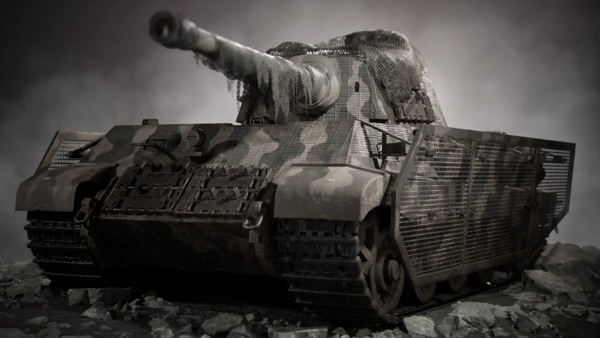
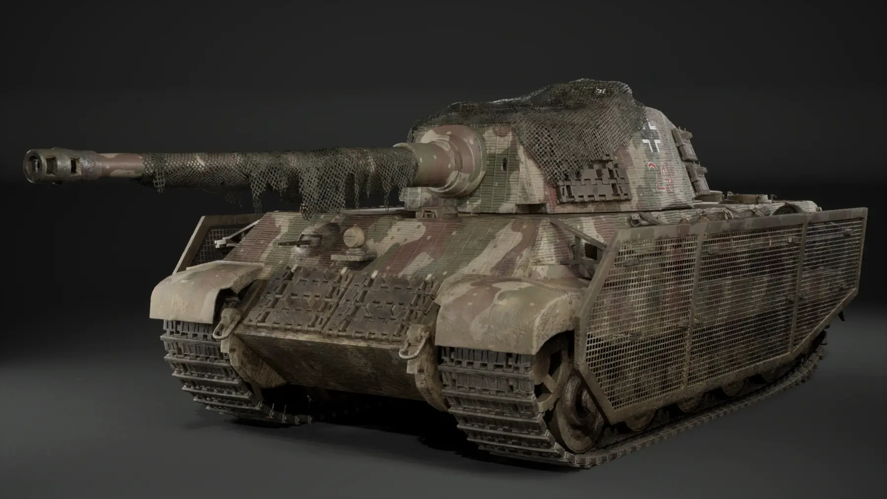
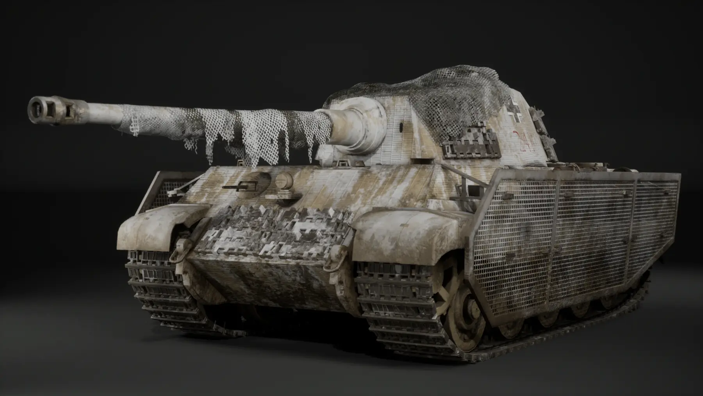
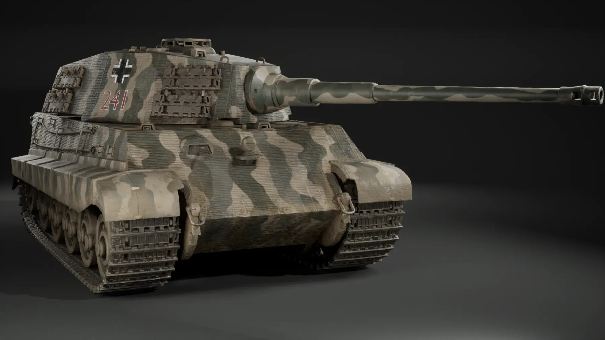
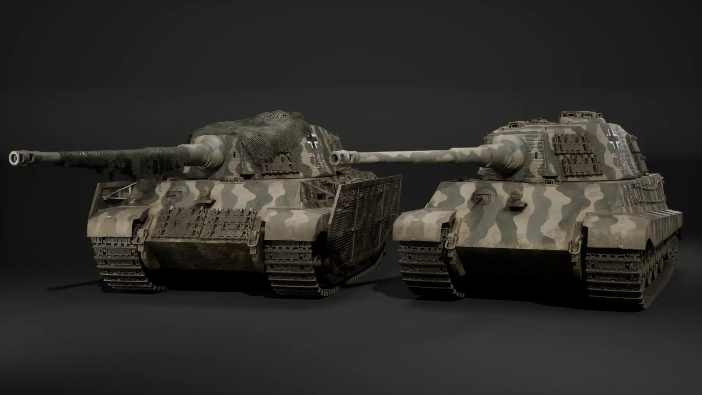
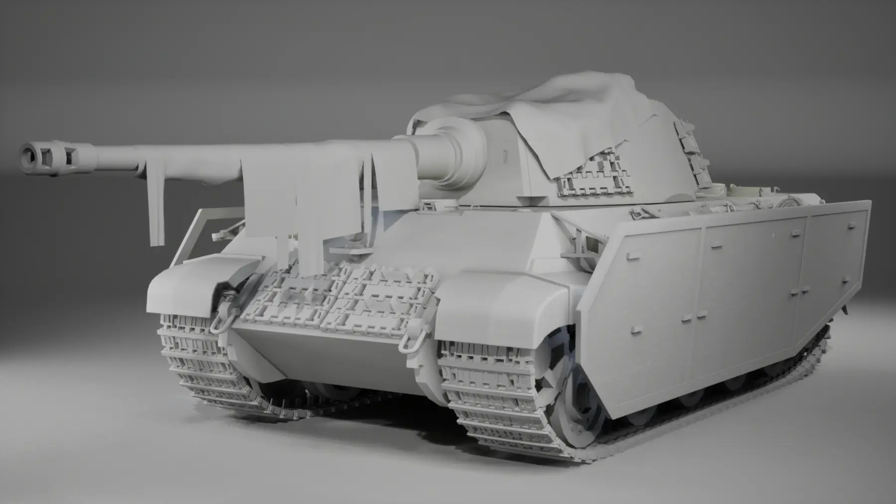
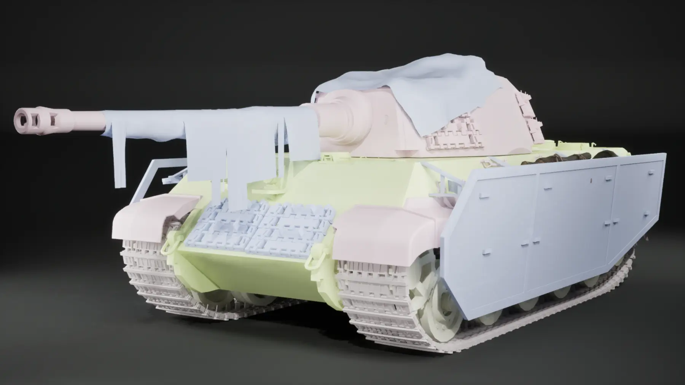
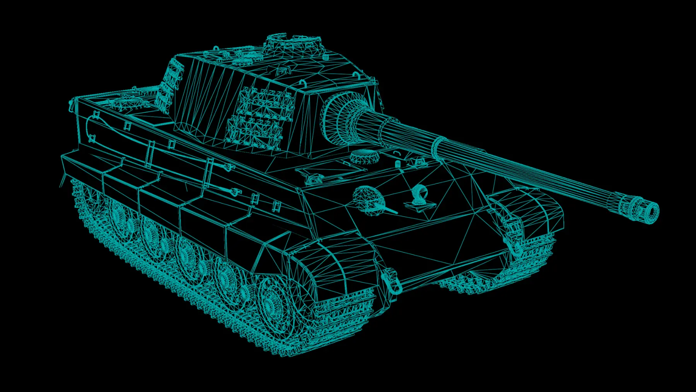
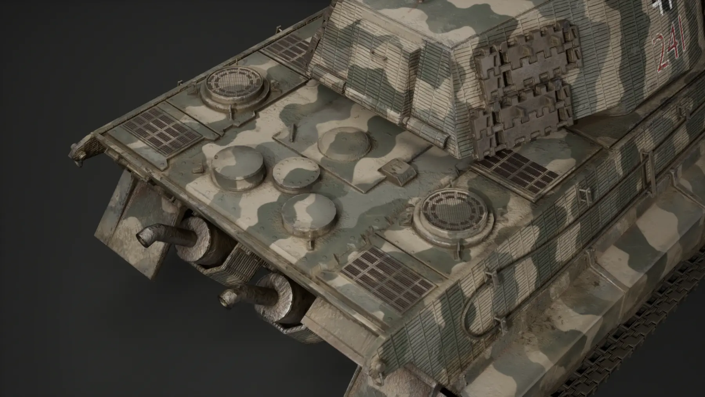
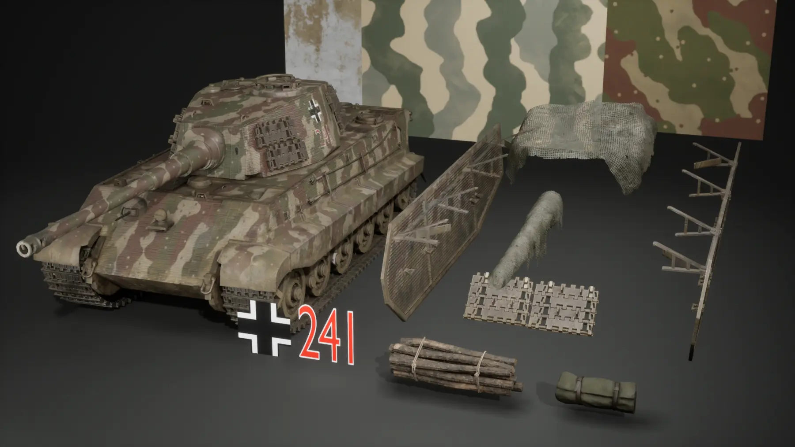

Real-time Vehicle Art · 2026
Tiger II
1946
An alternate-history continuation of the Tiger II, developed as a battle-worn vehicle with field modifications, layered materials and two presentation variants.

Concept
I reimagined the Tiger II as if development had continued into 1946. The design combines the recognisable Henschel-turret silhouette with improvised protection, camouflage netting, spare equipment and accumulated damage to suggest a vehicle kept in service beyond its intended lifespan.
The project was built in two forms: a cleaner base vehicle that exposes the underlying model and camouflage, and a veteran version layered with slat armour, netting, gear, mud and wear.
I created the vehicle, including its modelling, UVs, baking, texturing and asset assembly. For the dramatic presentation shot, I built the Unreal Engine studio setup and lighting, used a Niagara system for the smoke, and dressed the ground with rubble assets sourced from Fab.



Two-stage presentation
Showing both versions separates the quality of the base asset from the added storytelling. The clean configuration establishes the vehicle’s proportions, camouflage and zimmerit, while the veteran version demonstrates how secondary assets and surface history can alter its character.

Modelling and asset construction
The main vehicle was modelled in Maya using a hard-surface workflow. Repeating track components were assembled with MASH, while curves supported ropes and straps. Cloth elements and sandbags were developed through Blender simulations and sculpting before being prepared for the final real-time asset.
Secondary pieces—including spare tracks, slat armour, logs, storage, chains and camouflage netting—were created as reusable additions. This made it possible to build visual density without permanently merging every storytelling element into the base tank.



Materials and weathering
I built the zimmerit surface in Substance 3D Designer and textured the vehicle across four 4K sets in Substance 3D Painter. The material treatment combines three-colour camouflage with paint wear, roughness variation, grime, dust, mud and leak staining.
Wear was placed according to use rather than applied uniformly: exposed edges, access points, tracks, lower panels and horizontal surfaces receive different kinds of accumulation. The veteran variant pushes this further with damaged cloth, dirty field equipment and heavier environmental buildup.

Real-time presentation
I assembled the final asset in an Unreal Engine 5 studio scene, using box lighting and controlled exposure to preserve the silhouette while keeping the layered surface work readable. For the dramatic opening image, I added smoke with Niagara and arranged rubble sourced from Fab to give the vehicle a grounded presentation setting.
The result is a complete vehicle-art study covering research, hard-surface modelling, high-to-low asset work, UVs, baking, procedural material creation, PBR texturing, optimisation and real-time presentation.
